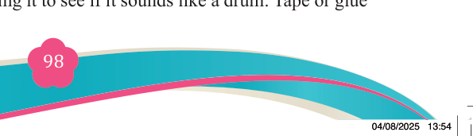
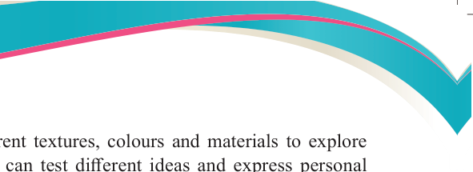
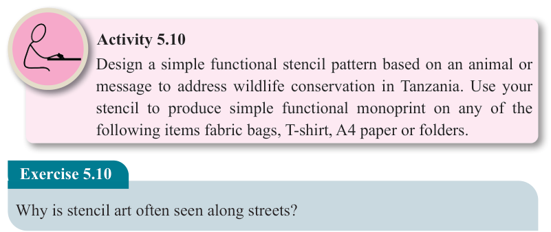

Step 7: Experimentation
You can try using different textures, colours and materials to explore

creative outcomes. You can test different ideas and express personal
messages through design.

Activity 5.10
Design a simple functional stencil pattern based on an animal or message to address wildlife conservation in Tanzania. Use your stencil to produce simple functional monoprint on any of the following items fabric bags, T-shirt, A4 paper or folders.
Exercise 5.10
Why is stencil art often seen along streets?
Screen mono printing technique
This is a technique used to transfer a design onto various surfaces such as fabric,
paper, or other flat surfaces. It involves pushing ink through a mesh screen using a
squeegee. These materials can be T-shirts, paper, bags or any other printable objects.
Materials and tools:
(i)
Mesh screen or embroidery hoop or frame
(ii)
Squeegee
(iii)
Cotton fabric, paper or any other printable materials.
(iv)
Acrylic paint or screen ink
(v)
Masking tape
(vi)
Cardboard
(vii) Sponge
(viii) Water
(ix)
Pencils
(x)
Cutting tools
(xi)
Painting brushes
(xii) Mod podge sealer or glue
Steps to follow:
Step 1: Prepare the screen frame
Stretch mesh tightly across the embroidery hoop or wooden frame. Secure
it tightly and test by tapping it to see if it sounds like a drum. Tape or glue